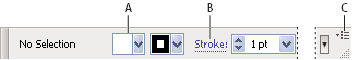

Control panel overview
The Control panel offers quick access to options related to the objects you select. By default, the Control panel is docked at the top of the work area.
Options displayed in the Control panel vary depending on the type of object or tool you select. For example, when you select a text object, the Control panel displays text-formatting options in addition to options for changing the color, placement, and dimensions of the object.

Control panel
- A.
- Hidden options
- B.
- Link to another panel
- C.
- Panel menu
When text in the Control panel is blue and underlined, you can click the text to display a related panel or dialog box. For example, click the word Stroke to display the Stroke panel.
 Change the kinds of controls that appear in the Control panel
Change the kinds of controls that appear in the Control panel
 Select or deselect options in the
Control panel menu.
Select or deselect options in the
Control panel menu.Open and close a panel or dialog box from the Control panel
- Click a blue underlined word to open its associated panel or dialog box.
- Click anywhere outside of the panel or dialog box to close it.